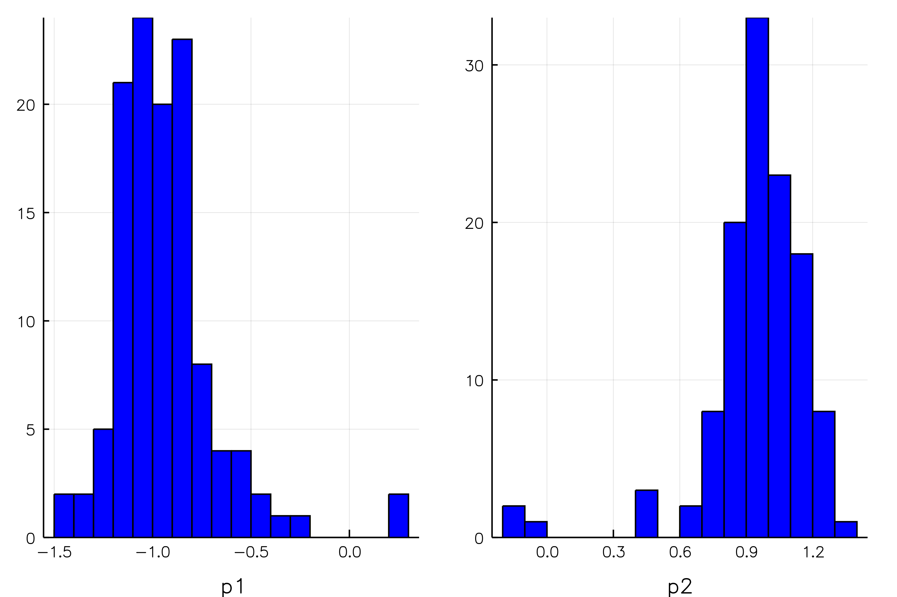

Examples
Estimating Means of a bivariate normal
Let's define a function that returns a Normal distribution with a certain location, and let's call this our model:
Our aim will be to estimate the location of two means from data that is simulated from this law with an MCMC chain, given some true $p$. (Of course the sample mean would be a perfectly valid estimator.) The twist here is that we will pretend that we don't have access to the entire simulated dataset
but only a set of summary statistics $S$ - in our case, we'd have two moments of this data, namely $\mu_j = \frac{1}{N}x_{ij},j=1,2$. Our objective function is the squared distance between $\mu$, and what our model produces instead. That is, we give a parameter vector $p'$ to our model $m$, which in turn produces 2 simulated moments denoted $\mu'$. Finally, we assess their respective distance - we want to eventuall find $p' \approx p$.
Again:
- Assume true moments $\mu$ (and, hence, true $p$)
- repeatedly create data from $m(p')$ for different $p'$ drawn from a space $[-3,3] \times [-2,2]$. For each dataset, compute $\mu_j' = \frac{1}{N}x_{ij},j=1,2$.
- Compute distance $\mu,\mu'$ and decide according to the
SMM.MAlgoBGPalgorithm whether to accept or reject current $p'$.
julia> using SMM
julia> pb = OrderedDict("p1" => [0.2,-3,3] , "p2" => [-0.2,-2,2] ) # param spaces
julia> moms = DataFrame(name=["mu1","mu2"],value=[-1.0,1.0],weight=ones(2)) # truth
julia> mprob = MProb()
julia> addSampledParam!(mprob,pb)
julia> addMoment!(mprob,moms)
julia> addEvalFunc!(mprob,objfunc_norm)
julia> nchains = 3
julia> opts =Dict("N"=>nchains,
"maxiter"=> 10,
"maxtemp"=> 5,
"coverage"=>0.025,
"sigma_update_steps"=>10,
"sigma_adjust_by"=>0.01,
"smpl_iters"=>1000,
"parallel"=>true,
"min_improve"=>[0.05 for i in 1:nchains],
"mixprob"=>0.3,
"acc_tuners"=>[12.0 for i in 1:nchains],
"animate"=>false)
julia> MA = MAlgoBGP(mprob,opts)
BGP Algorithm with 3 BGPChains
============================
Algorithm
---------
Current iteration: 0
Number of params to estimate: 2
Number of moments to match: 2
julia> run!(MA)
[ Info: Starting estimation loop.
Progress: 100%|████████████████████████████████████████| Time: 0:00:04
┌ Warning: could not find 'filename' in algo.opts
└ @ SMM ~/.julia/v0.6/SMM/src/mopt/AlgoAbstract.jl:69
[ Info: Done with estimation after 0.1 minutes
Full list of options is available at the SMM.BGPChain documentation
Diagnostic tools
For this running example, here are a couple of plots that can easily be generated with the package.
1. Objective function and param values history
- This can be generated via
plot(MA.chains[1])(i.e. plots the first chain).MAis the final object of the above example.

2. Histograms of parameter values
Plot a histogram of all accepted parameter values:
histogram(MA.chains[1])
3. Slices through objective and moment functions
This can be generated via
s = doSlices(mprob,30)
plot(s,:value) # plot objective function over param values
plot(s,:mu1) # plot value of moment :mu1 over param values
plot(s,:mu2) # plot value of moment :mu2 over param valuesThe moment function plots show with red dashes the true moment value, and how the corresponding simulated moment changes as we move parameter $p$. This basically illustrates how and whether moment $m_i$ contributes to the identification of the model.


Finally, the slice through the objective function illustrates whether we attain a local maximum (in this case at the true parameter values $p = (-1,1)$).

4. Tracking proposals
- The variance of the
SMM.proposalkernel is updated everysigma_update_stepsas set in theoptsfor theSMM.MAlgo. - There is a plotting method which can generate a gif of its evolution.
- Just set
animate = truein theopts, e.g.
opts =Dict("N"=>nchains,
"maxiter"=>200,
"maxtemp"=> 5,
"smpl_iters"=>1000,
"parallel"=>false,
"min_improve"=>[0.0 for i in 1:nchains],
"acc_tuners"=>[20;2;1.0],
"animate"=>true)In the current example, this yields